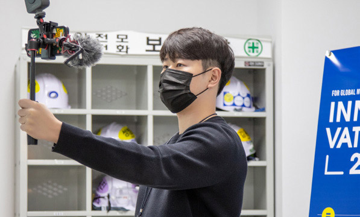

2022 봄호 Vol.67
원익로그
소통 달인들의 하루
원익아이피에스 고객지원팀 SEC 3그룹편
오태규 님 SEC 3G
AED 설비를 셋업하고 유지관리하는 등 현장 일선에서 업무를 하는 고객지원팀 3그룹. 24시간 설비가 가동하기에 회사의 출퇴근이 따로 없을 때가 많은 그들이지만 늘 원익아이피에스의 얼굴이라는 자긍심으로 업무에 임하고 있다. 그런 그들이 ‘SEC 3그룹의 하루’를 브이로그에 담았다. 그들의 하루를 들여다보며 그들의 브이로그를 감상하며 함께 응원해보자.
원익아이피에스의 자랑스러운 얼굴들
고객지원팀은 각 4개의 그룹으로 구성되어 있으며, 전체 인원은 30명으로 고객사의 대부분은 삼성전자다. 장비 1대당 셋업 기간만 해도 평균 1~2개월 정도 걸리며, 유지관리는 보증기관에 문제가 생길 경우 무조건 대응해야 한다. 사정이 이렇다 보니 삼성전자의 화성과 평택의 현장이 그들의 주요 일터로 하루 업무 중 3분의 2를 이곳에서 보낸다. 이 때문에 그들의 하루 일과는 빠듯하다. 오전에 출근하면 데일리 회의를 진행해 현안을 팀원들에게 공유하는 시간을 갖는다. 오전 업무를 마치면 라인 입실을 하기 위해 현장으로 간다. 현장에서 고객과의 소통을 하며 업무를 진행하면 다시 사무실로 돌아와 다음날 필요한 데일리 리포트를 정리한다. 특히 설비가 24시간 가동되기 때문에 퇴근 후에도 전화대응과 현장대응을 할 때도 있다. 그만큼 엔지니어 업무와 함께 커뮤니케이션 능력도 중요합니다. 사람과의 소통에서 부담이 될 수밖에 없지만, 그들은 원익아이피에스의 얼굴이라는 ‘자부심’으로 긍정의 마인드로 업무하고 있다.수평적 소통으로 어려움을 극복하다
‘사람을 상대하는 일’이 세상 가장 어렵다고 말한다. 그만큼 현업에서 일하는 팀원들에게는 여러 고충이 있을 수밖에 없을 터. 특히 일에 능숙하지 않은 신입사원들은 엔지니어 업무보다 더 큰 부담으로 작용하기도 한다. 이 때문에 고객지원팀은 구성원간 자유롭게 소통할 수 있는 분위기를 조성해 서로의 고충의 해결책을 모색한다. 그중 하나가 데일리 회의다. 매일 아침 데일리리포트를 통해 고객의 요구 사항과 이슈 등을 서로 공유해 업무를 공유한다. 또한 직원들의 개인적인 어려움, 문제 등을 해소하기 위해 정 기적으로 면담 시간을 두고 있다. 하지만 꼭 정기적인 면담 시간이 아니더라도 평상시에도 고민을 말하는 게 어려운 분위기는 아니라고 한다. 수시로 선후배 간, 동료들 간의 대화를 통해 일의 고민과 부담감등을 해결한다. 특히 최근 몇 년간 코로나19로 대응업무가 쉽지 않은 상황이었지만, 고객지원팀은 더욱 끈끈함 유대감을 가지고 업무에 매진하고 있다. 그럼 지금부터 고객지원팀의 재간둥이 오태규 님이 소개하는 브이로그 속으로 들어가보자.
#10

“먼저 자기 소개 부탁드려요!”
“장재봉입니다.”
“네, 저는 이원희입니다.”
“안녕하세요. 이익재입니다.”
응모 기간 : 2022년 6월 7일(화)까지
0 댓글